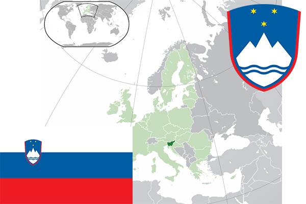

To`liq nomi: Sloveniya Respublikasi
Region: Markaziy Yevropa
Qonunchilik shakli: Respublika
Mustaqillik kuni: 25 iyun 1991-yil
Poytaxt: Lyublyana
Maydoni: 20,273 km²
Chegaradosh davlatlari: Italiya, Avstriya, Vengriya, Xorvatiya
Aholisi: 2,065,895 (2016-yil)
Aholi zichligi: 101.8/km2
Aholining o`rtacha yoshi: 80,72 yil
Rasmiy tili: Sloven tili
Dini: Xristian
Pul birligi: Tolar
Telefon prefiksi: +386
Internet domen: .si
Xalqaro tashkilotlarga a`zoligi: NATO(2004-yil), YeI(2004-yil)
Dengiz va okeanlarga chiqishi: Adriatik dengizi
YIM: Butun: $52.35 mlrd(2017-yil) Jon boshiga: $25,329
Yirik shaharlari: Lyublyana , Maribor, Kelj.